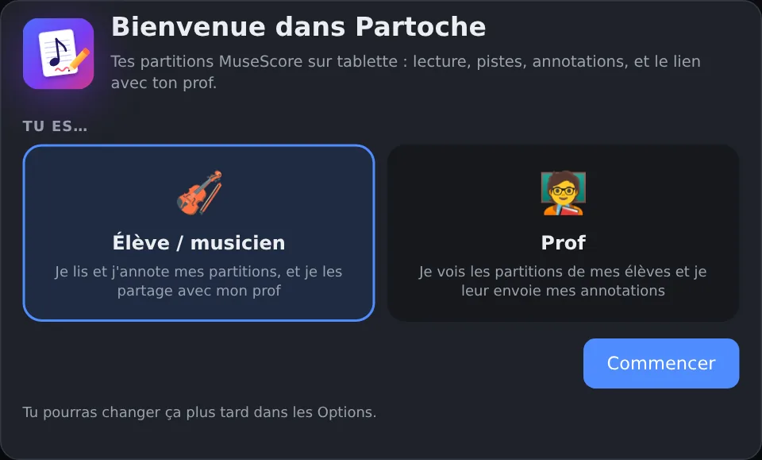
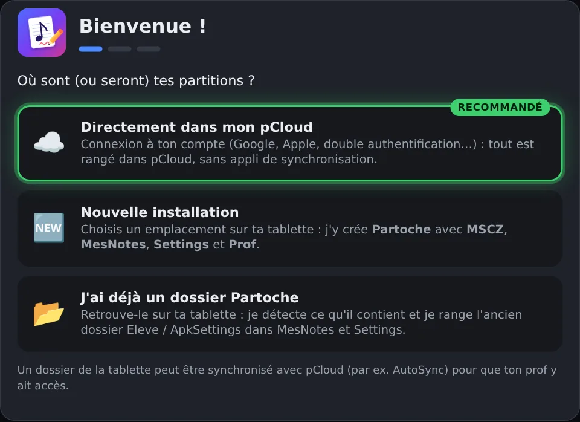
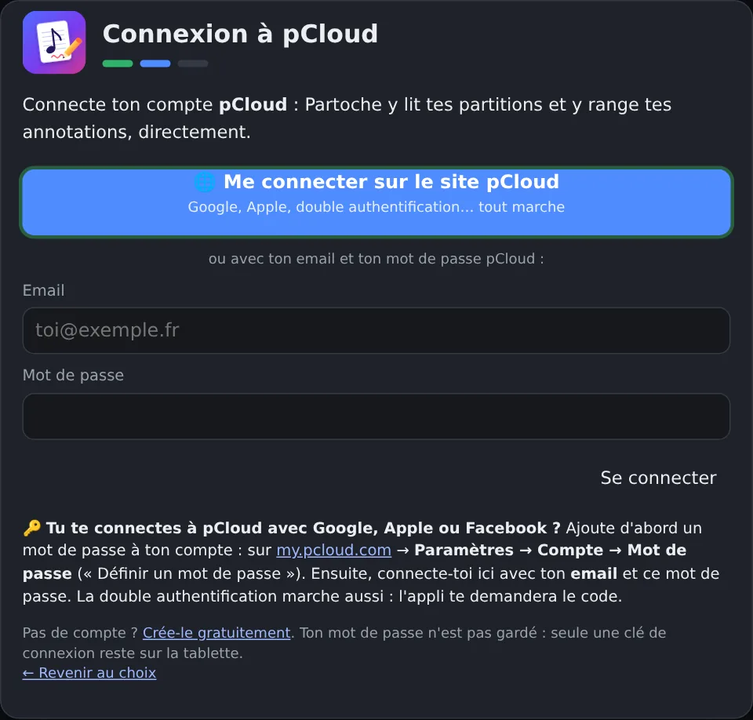
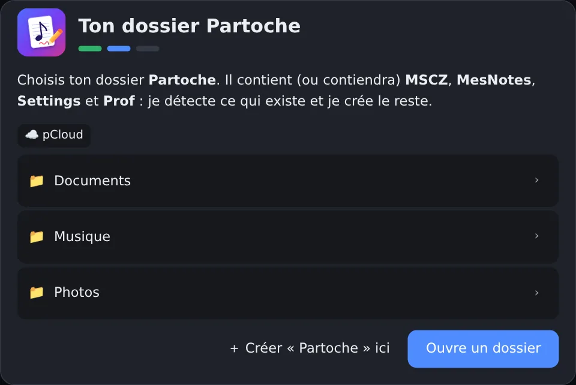
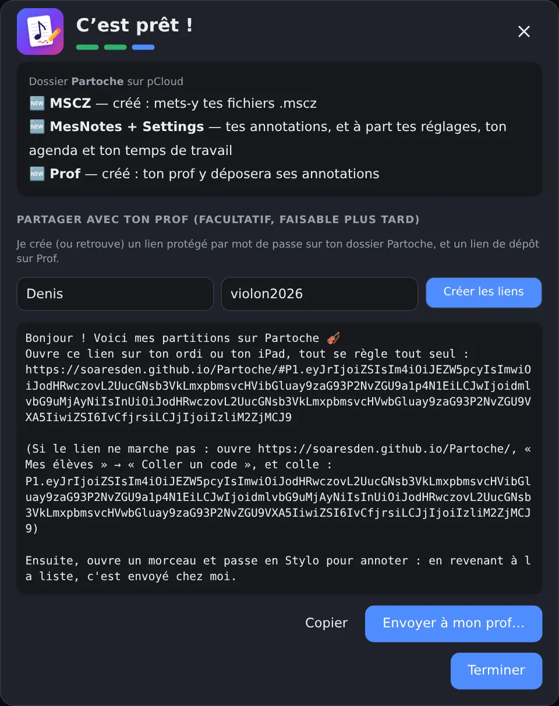
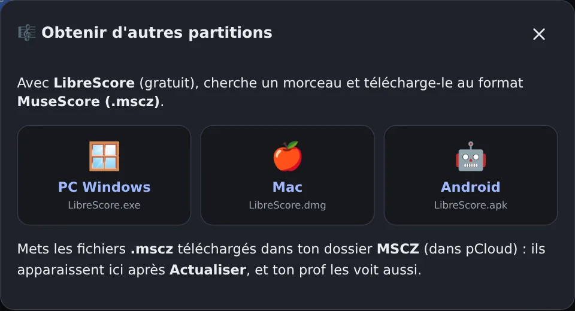
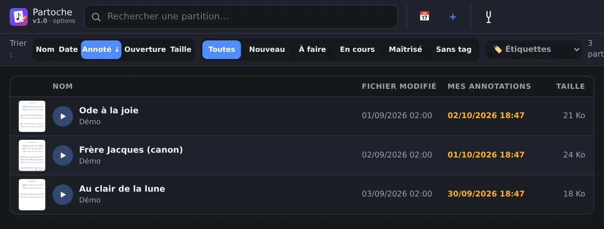
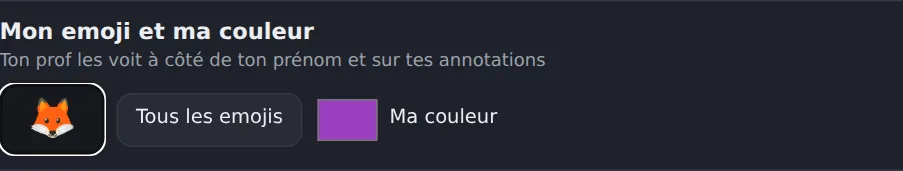

Il te faut
Crée ton compte pCloud
pCloud est un « disque dur sur Internet », gratuit (10 Go). C'est là que vont tes partitions et tes annotations : ton prof y aura accès, sans rien pouvoir abîmer.
- Va sur pcloud.com et touche S'inscrire.
- Entre ton email et choisis un mot de passe (ou « Continuer avec Google »).
- Ouvre l'email de pCloud et confirme ton adresse.
Installe Partoche And Prof sur la tablette
Sur la tablette, ouvre ce lien :
⬇️ Télécharger Partoche And Prof- Le fichier Partoche.apk se télécharge. Une fois fini, touche Ouvrir (ou ouvre-le depuis les téléchargements).
- Android te prévient (« source inconnue ») : touche Paramètres → active Autoriser depuis cette source → reviens en arrière.
- Touche Installer, puis Ouvrir.
Ouvre Partoche And Prof et choisis « Élève »
Au premier lancement : 🎻 Élève / musicien → Commencer.

Connecte ton pCloud
- Touche ☁️ Directement dans mon pCloud (celle marquée Recommandé).
- Touche 🌐 Me connecter sur le site pCloud.
- La page de pCloud s'ouvre : connecte-toi comme sur l'ordinateur (email + mot de passe, ou Google). Si pCloud te demande un code, mets-le.
- C'est tout : Partoche And Prof revient tout seul à l'écran suivant.


Crée ton dossier Partoche
Partoche And Prof te montre ton pCloud. Touche ＋ Créer « Partoche » ici puis Utiliser ce dossier.
L'appli prépare tout toute seule : MSCZ (tes partitions), MesNotes (tes annotations), Settings (tes réglages) et Prof (ce que ton prof t'envoie). Tu n'as rien à toucher dedans.

Relie-toi à ton prof
Toujours dans l'assistant (ou plus tard : touche le logo Partoche And Prof → Partager avec mon prof) :
- Écris ton prénom et invente un mot de passe (6 caractères ou plus, pas celui de pCloud).
- Touche Créer les liens.
- Touche Envoyer à mon prof… et choisis WhatsApp, SMS ou email → ton prof.

Ajoute tes partitions
Partoche And Prof lit les fichiers MuseScore (.mscz). Pour en trouver :
- Dans Partoche And Prof, touche ＋ Partitions : installe LibreScore (sur l'ordinateur c'est le plus simple), cherche ton morceau et télécharge-le en .mscz.
- Mets le fichier dans ton pCloud, dossier Partoche → MSCZ : sur my.pcloud.com, glisse-le dans le dossier.
- Dans Partoche And Prof, touche ⟳ : la partition apparaît.


Choisis ton emoji et ta couleur
Touche le logo Partoche And Prof (en haut à gauche) → Mon emoji et ma couleur. Ton prof te reconnaîtra dans sa liste d'élèves.

🎉 C'est prêt ! Et ensuite ?
Ouvre un morceau, passe en Stylo, écris. Les annotations de ton prof apparaissent en couleur, avec son prénom.
Mes cours → propose un horaire (ou accepte le sien). Tu peux voir quand ton prof est disponible.
Appui long sur une partition → Demander l'avis de mon prof.
Appui long → À faire, En cours, Maîtrisé, 🔥 L'enfer, 😎 Easy…
🧑🏫 Et le prof ?
Rien à installer, pas de compte. Quand il reçoit ton message :
- il clique sur le lien (sur son ordinateur ou son iPad) ;
- la première fois, il écrit son prénom ;
- tu apparais dans Mes élèves, avec ton emoji : il voit tes partitions, annote, propose des cours.
Tout le reste est dans le guide complet (EN · 한국어).